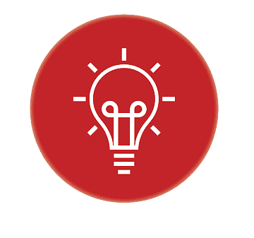

Qui sommes nous ?
Is’Health est une jeune Start-up spécialisée dans le développement de services liés à la santé. Nous avons développé I Connect, un système innovant et révolutionnaire qui pour permet de surveiller constamment votre santé ainsi que l’état de l’environnement qui vous entoure. Que vous soyez atteints de maladie cardiaque ou pulmonaire, asthmatique ou juste soucieux de votre santé, notre dispositif est fait pour vous.

Nous sommes innovants
En savoir plus
Nous nous soucions de notre planète.
En savoir plus
Nous protégeons vos données
En savoir plus